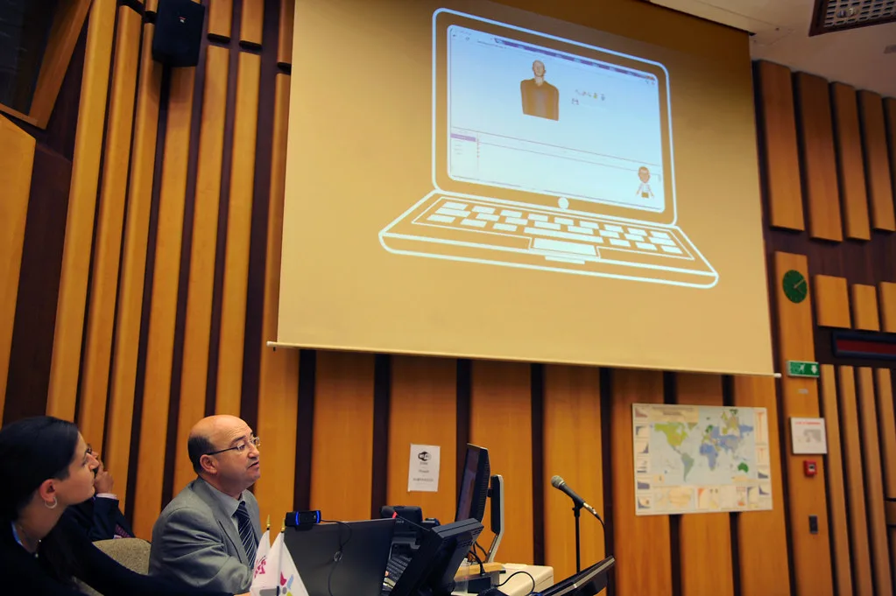

구글 딥마인드, 수어 읽는 AI 'SL2T' 공개…픽셀11에 첫 탑재
구글 딥마인드가 수어를 실시간으로 텍스트로 옮겨주는 인공지능 모델 'SL2T'를 공개하고, 이를 최신 스마트폰인 픽셀11에 처음으로 탑재했다. SL2T는 여러 나라의 수어를 함께 학습한 다국어 수어-텍스트 번역 모델로, 초기 버전은 미국수어(ASL)를 영어 텍스트로 옮기는 기능부터 지원한다. 청각장애인이나 난청 이용자가 스마트폰 카메라를 향해 손을 움직이며 수어로 말하면, 그 내용이 곧바로 화면에 문자로 표시되는 방식이다.
이번 기술의 핵심은 음성인식 인공지능이 사용자의 말을 텍스트로 바꿔주듯, 수어 사용자도 손짓만으로 스마트폰과 상호작용할 수 있게 됐다는 점이다. SL2T는 픽셀11의 지보드(Gboard)와 라이브 트랜스크라이브 기능에 별도 비용 없이 통합돼, 이용자는 자판을 두드리지 않고도 웹 검색을 하거나 이메일과 문자메시지 초안을 작성하는 등 다양한 작업을 수어만으로 처리할 수 있다.
구글 측은 SL2T가 사생활 보호에도 신경을 쓴 구조로 설계됐다고 설명했다. 기기 안에 내장된 컴퓨터 비전 모델이 얼굴과 손, 팔, 몸통의 움직임을 실시간으로 추적한 뒤, 실제 영상 자체가 아니라 좌표 형태로 요약된 정보만 클라우드 서버로 전송하는 구조다. 이 덕분에 번역 처리 속도를 높이면서도 사용자의 얼굴이 담긴 영상이 외부로 그대로 유출될 위험을 줄였다는 것이 회사 측 설명이다.
SL2T는 특정 국가의 수어 하나만을 별도로 학습시킨 것이 아니라, 50개가 넘는 언어권의 수어 데이터 10만 시간 이상을 한꺼번에 학습시켜 만들어졌다. 이 가운데 약 4분의 1이 미국수어 관련 데이터였던 것으로 알려졌다. 구글은 여러 언어의 수어를 동시에 학습시킴으로써, 서로 다른 수어 사이에 공통으로 나타나는 손동작이나 표현 구조의 패턴을 모델이 스스로 익히도록 했다고 밝혔다.

픽셀11은 지난 20일 정식 출시되면서 곧바로 SL2T 기능이 탑재된 첫 스마트폰이라는 의미를 갖게 됐다. 이는 청각장애인 이용자가 별도의 통역 애플리케이션이나 보조기구 없이, 스마트폰의 입력창에 직접 수어로 문자를 입력할 수 있는 세계 최초 사례로 꼽힌다. 그동안 음성 명령 중심으로 발전해 온 스마트폰 인터페이스에, 수어라는 또 하나의 입력 방식이 더해졌다는 점에서 의미가 크다는 평가가 나온다.
다만 SL2T는 아직 초기 단계의 기술인 만큼, 지원하는 언어와 표현의 범위가 제한적이라는 한계도 있다. 현재는 미국수어를 영어로 옮기는 기능이 우선 지원되는 단계로, 한국어를 포함한 다른 언어권 수어에 대한 지원 확대 여부와 시점은 아직 공식적으로 밝혀지지 않았다. 업계에서는 구글이 이번 공개를 시작으로 점진적으로 지원 언어를 늘려나갈 것으로 내다보고 있다.
정보기술 업계에서는 이번 발표를 계기로 인공지능 기반 접근성 기술 경쟁이 한층 치열해질 것이라는 전망도 나온다. 그동안 자막이나 음성 인식 등 청각장애인을 위한 보조 기술은 꾸준히 발전해 왔지만, 반대로 수어를 이해하고 텍스트로 옮기는 기술은 상대적으로 더딘 편이었다. 구글의 이번 시도가 다른 스마트폰 제조사와 소프트웨어 업체들의 관련 투자를 자극하는 계기가 될지 주목된다.